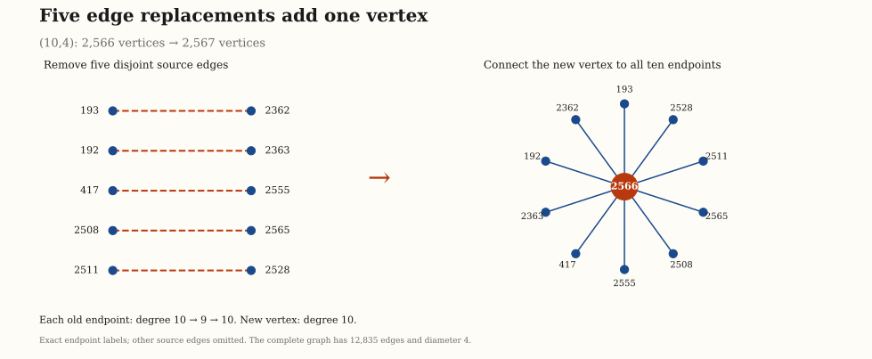

Latest D5 endpoints: 37,632 / 42,433 ↗
Degree–diameter · (10,4)
2,567 vertices.
Ten neighbors. Four hops.
A 10-regular graph of exact diameter 4 raises the constructive lower bound by one vertex above the Comellas table entry of 2,566, checked 2026-11-05.
Constructed in a MathRSI v2 + DD plugin run, with the PR #7 handoff repair. Its local-edit and exact-replay methods are incorporated into the existing DD plugin in v4. The current v5 maintenance receives later DD improvements.
Construction
How the last vertex fits
The local 2,566-vertex predecessor is already 10-regular. Delete five disjoint edges, then join a new vertex to all ten endpoints. Every vertex keeps degree 10.
Degree bookkeeping is only the first step: distances between old vertices and from the new vertex must all stay within four. The final extension needs no additional switch; the two preceding extensions use old-only 2-switches.
(193,2362) · (192,2363) · (417,2555)
(2508,2565) · (2511,2528)

Dated table comparisons
More vertices at the same degree and diameter
| Degree, diameter | Previous | New | Gain |
|---|---|---|---|
| (10,4) New | 2,566 | 2,567 | +1 |
| (11,5) | 37,628 | 37,631 | +3 |
| (12,5) | 42,342 | 42,402 | +60 |
| (16,4) | 16,384 | 16,416 | +32 |
Comellas entries: (10,4) checked 2026-11-05; other three accessed 2026-11-03. These are constructive lower bounds, not claims of global optimality.
Catalogue totals: 163 graph instances · 44 parameter pairs · 49 completed concrete-graph Lean instances. Accepted intermediate graphs count as instances, not separate records.
Research → workflow
How it reached MathRSI
- Original researchThree dated table improvements and 153 graph instances, using standalone ARIS tools.
- v2 · DD pluginResearch methods and evidence distilled into the Degree–Diameter plugin.
- v2 + DD runUsing v2 with the PR #7 handoff repair, the run reaches 2,567 vertices at (10,4).
- v4 · plugin methodsExact edit recipes, local degree-capacity moves and whole-graph distance checks are incorporated into the existing DD plugin.
Evidence
Replay the construction. Inspect the receipts.
The portable chain starts from the published 2,557-vertex graph and reconstructs ten accepted orders, 2,558–2,567.
- Independent all-roots BFS: 2,567 roots; exact diameter 4; distance-four witness (0,2). The checker used neither construction code nor cached distances.
- Lean final assembly: preserved Final2567 and Final2567Audit receipts report exit 0 for the unconditional original Fin 2567 target, with only the three standard axioms.
- Exact edit replay: all ten reconstructed unordered edge sets matched the accepted originals in the publication check. Replay does not rerun search, BFS or Lean.
External formal C review remains incomplete. The portable package ships verification receipts, not the full Lean sources and dependencies needed to rebuild the formal proof. The added completed Lean catalogue instances are 2,558 and 2,567; the eight intermediate orders have no separate completed Lean entry.